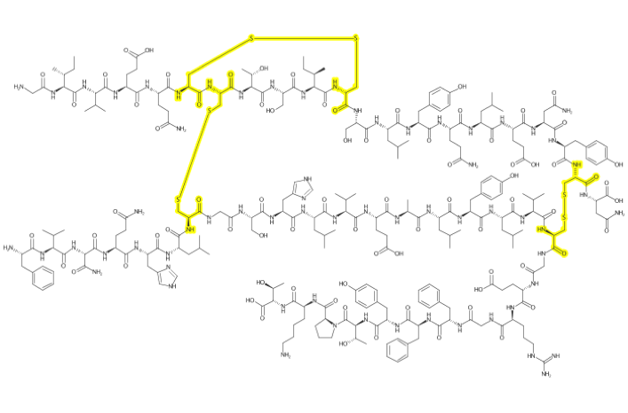

depict
depict is an R wrapper around the wonderful depiction api written by John May. The entire CDK team, but especially John, have been steadily improving the visualization features of CDK. The depiction API is succinct and powerful and provides access to a vary large amount of the end-user desired functionality with a small number of composable functions. Because of the design of this API it is now relatively straightforward to design a simple streamlined interface to allow users to quickly and easily generate beautiful graphics.
Installation
You can install depict from github with:
# install.packages("devtools")
devtools::install_github("CDK-R/depict")Simple Depiciton
A simple wrapper around cdk’s excellent depict module.
library(depict)
library(magrittr)
library(grid)
# you must supply java colors
color <- J("java.awt.Color")
# load in penicillin
pen <- parse_smiles("CC1(C(N2C(S1)C(C2=O)NC(=O)CC3=CC=CC=C3)C(=O)[O-])C penicillin")
cav <- parse_smiles("CN1C=NC2=C1C(=O)N(C(=O)N2C)C")
# define the regions to highlight
# either all atoms/bonds
# or a SMARTS-defined subregion
atms <- pen$atoms()
bnds <- pen$bonds()
lactam <- match_smarts("C1(=O)NCC1", pen)
# use piping to change the behavior as desired
depiction() %>%
highlight_atoms(atms, color$LIGHT_GRAY) %>%
highlight_atoms(bnds, color$LIGHT_GRAY) %>%
highlight_atoms(lactam, color$RED) %>%
set_size(400, 400) %>%
set_zoom(3) %>%
outerglow() %>%
add_title() %>%
depict(pen) %>%
get_image() %>%
grid::grid.raster()A Larger Example
insulinmol <- system.file("molfiles/ChEBI_5931.mol", package="depict")
insulin <- read_mol(insulinmol)
cysteine <- match_smarts("C(=O)C(CS)N", insulin)
xlinks <- match_smarts("SS", insulin)
dp <- depiction()%>%
set_size(700, 400) %>%
set_zoom(10) %>%
outerglow() %>%
highlight_atoms(cysteine, color$YELLOW) %>%
highlight_atoms(xlinks, color$YELLOW) %>%
depict(insulin) %>%
get_image() %>%
grid::grid.raster()
Coding notes
A few notes about setup:
- Java can be touch on OSX in particular. When in doubt try
sudo R CMD javareconfand reinstall rJava from source. - Currently I am using the
$operator in just about all of my functions. This makes it about a billion times easier and more succinct to code at the price of performance. If performance becomes an issue we can use low-level calls. If its important to you I’m happy to accept pull requests. - The API is still in flux. I am currently happy with the design but there are a few areas where I’d like to kick the tires a bit more - especially in regards to selection.
- java.awt.colors are a bit tough to warp since there are many arities and classes accepted.. I think I will provide a number of colors.
- SMARTS selectors. common smarts selections for AminoAcids, Nucleic Acids, Sugars may be worth including as well.